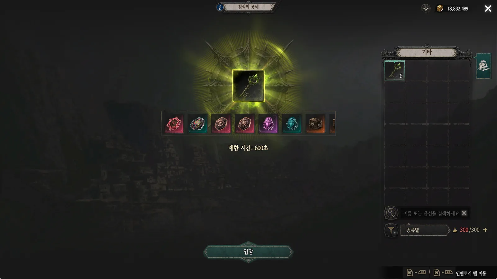
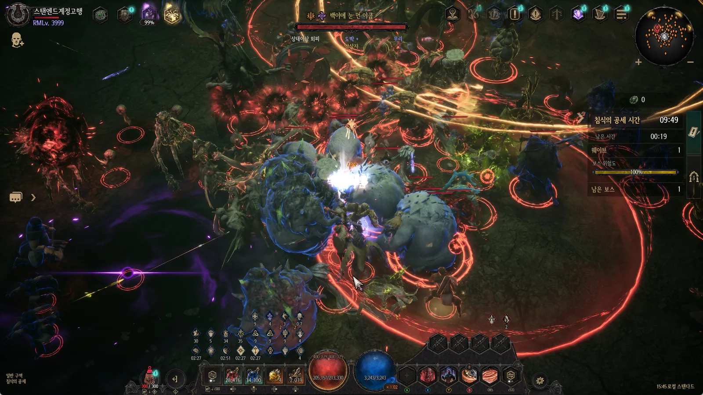
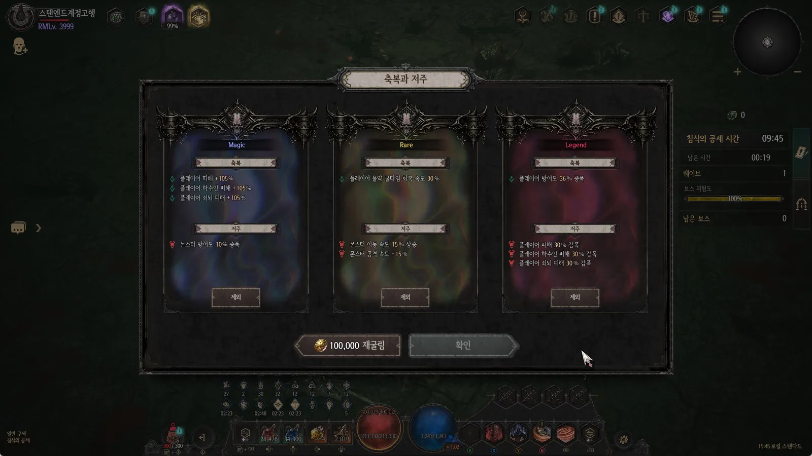
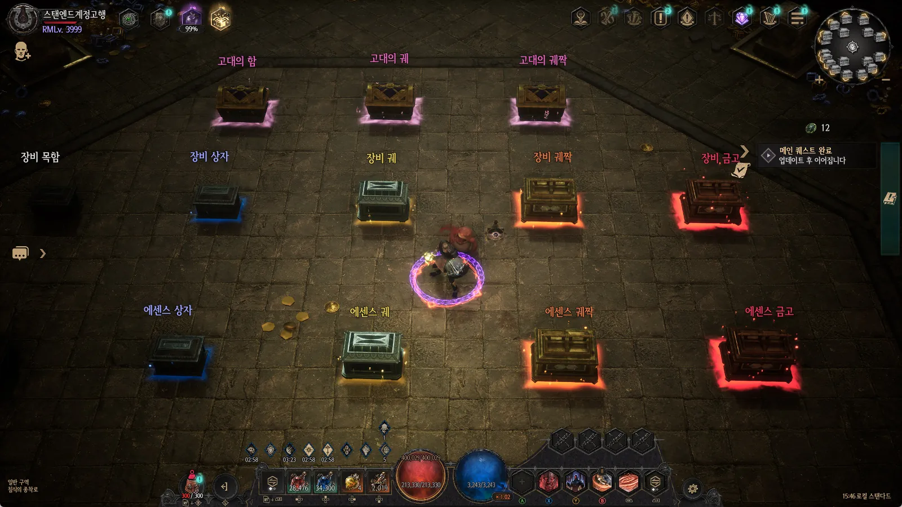
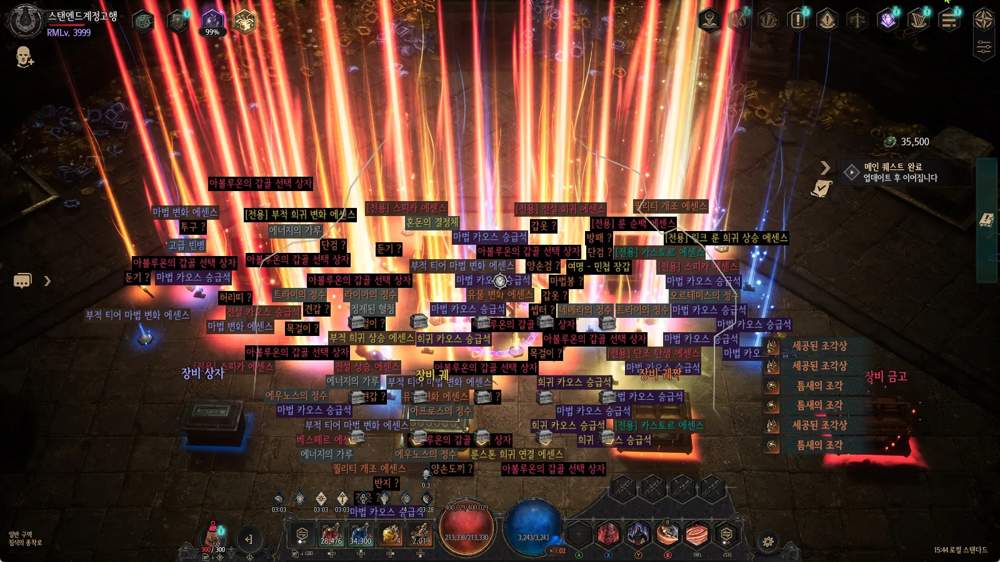
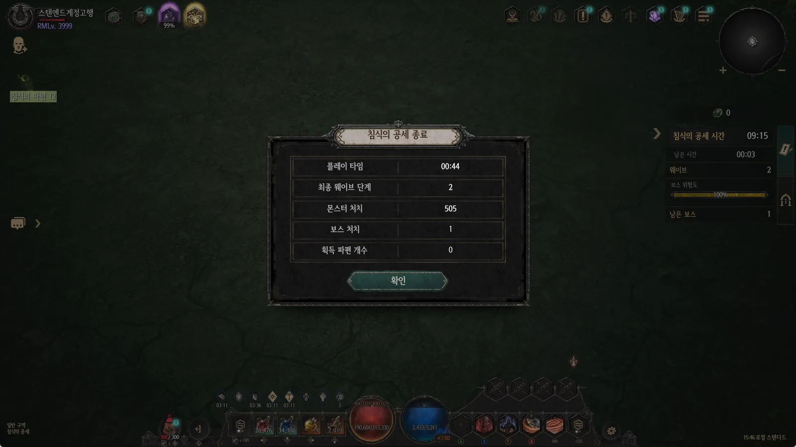

침식의 공세
제한 시간 동안 웨이브를 처치하며 축복·저주를 선택해 전투 조건을 바꾸고, 보상 스테이지에서 재화로 보물상자를 여는 연속 전투 콘텐츠
웨이브 → 선택 → 웨이브 → 보상
제한 시간 안에 웨이브를 처치하고, 축복과 저주를 함께 고르며 전투 조건을 바꿔 나갑니다. 마지막에는 보상 스테이지에서 모은 재화로 보물상자를 엽니다.
직접 담당
- 콘텐츠 · 세부 시스템 보완
- 전투 및 보상 스테이지 레벨 작업 · 퀘스트
- 웨이브 · 스폰 데이터 구성
공동 기획 · 시스템 서브
- 콘텐츠 구조와 세부 규칙 논의
- 축복과 저주 시스템 공동 기획
- 시스템 서브 역할로 개발 과정 참여






전투 규칙과 선택 흐름
웨이브 진행을 데이터로 구성하고(AgonyWaveConfig), 전투 중 확인할 상태와 축복·저주 흐름을 연결했습니다.
웨이브 진행 상태
전체 시간과 웨이브 시간, 보스 위험도(스폰까지의 %)와 남은 보스 수를 구분해 현재 전투 상태를 확인합니다.
이점과 부담을 함께 선택
축복과 저주를 한 선택지에서 확인합니다. 옵션 데이터에는 등급, 가중치, 적용 대상과 효과를 구분합니다.
선택을 조정하는 수단
제외 · 재굴림 · 확인으로 선택을 조정합니다. 재굴림 비용은 시도 횟수별 데이터로 관리합니다.
| 웨이브 예시 Key 1001 | 값 |
|---|---|
| 웨이브 제한 시간 | 30초 |
| 보스 소환 필요 게이지 | 200 |
| 몬스터 등급별 처치 점수 (GaugePerKill) | 10 · 30 · 50 · 80 |
| 보스 최대 스폰 수 | 1 |
| 콘텐츠 전체 시간 (GlobalFactor 31000014) | 600초 |
| 재굴림 / 제외 횟수 (GlobalFactor 31000021) | 재굴림 5 · 제외 5 · 특정 버프 보유 시 재굴림 10 |
사방의 압박과 이동을 유도하는 공간
일반 몬스터의 접근 방향과 보스의 등장 위치에 서로 다른 규칙을 적용했습니다.
일반 몬스터 — 8개 구간
전체 레벨을 8개 구간으로 나누어 사방에서 몬스터가 접근하도록 구성했습니다. 여러 방향의 대응을 유도합니다.
보스 — 맵 전체에서 무작위
보스 스포너의 범위를 맵 전체에 맞췄습니다. 등장 위치를 고정하지 않아 중앙에 머무르는 플레이를 줄이고자 했습니다.
전투 스테이지 3종 · 보상 스테이지 1종 / 스포너 · 프랍 데이터 / 내비게이션 메시 · 시작 위치 설정
구성은 유지하고, 등장 순서와 시간은 다르게
전투마다 조합의 변화를 주면서도, 몬스터가 한꺼번에 생성되어 몰리지 않도록 구성했습니다. 등급별 총량은 유지하되 등장 순서와 시점을 조정해, 동시 생성 부하와 순간적인 밀집을 완화하고자 했습니다.
실제 데이터 예시 — 종족별 몬스터 조합 · 각 칸: 등급·마릿수 / 아래: 생성 시점
무작위 몬스터 조합
서로 다른 몬스터 조합을 준비하고 무작위로 등장하도록 구성했습니다.
등급별 구성 유지
몬스터 조합이 달라도 등급별 마릿수 구성은 유지했습니다.
생성 시점 분산
조합별 등급 등장 순서를 바꾸고, 각 묶음을 시간차로 생성했습니다.
배치된 상자와 보상 데이터를 연결
보상방의 공간 배치, 이벤트 실행, 상자 구성을 구분해 실제 게임 흐름으로 연결했습니다.
- 상자 프랍과 상호작용 — 보물상자 18종을 구성하고 종류·등급별로 배치했습니다. 상호작용 범위와 방향을 조절해 오동작을 방지했습니다.
- 열기 전 안내 연결 — Prop 테이블에
OpenItemKey,OpenItemCount로 필요 재화를 설정하고,OpenItemDesc를 추가해 안내 문구가 출력되도록 작업했습니다.
예시: Stage 100004 → EventPackGroup 1000001 → TreasureBoxGroup 7200001~7200018 (Key와 Group을 구분)
콘텐츠 · 시스템 ERD
이벤트 실행과 생성 대상을 분리하고, 맵 연결·공통 설정·웨이브 조건·선택 옵션·비용·보상 표시를 각각의 테이블 관계로 정리했습니다.
| ERD | 핵심 관계 |
|---|---|
| 콘텐츠 ERD | StageEventMode → EventPackGroup으로 그룹 조회 → StageEventPack.TargetGroupKey로 상자/몬스터 그룹 조회. SpawnType에 따라 TreasureBox 또는 Spawner 참조 |
| 시스템 ERD ① 맵 연결 | GlobalFactor 참조값으로 입장(100001~100003)·보상(100004) 스테이지 연결. 시간·횟수는 테이블 간 키가 아닌 진행 규칙 |
| 시스템 ERD ② 웨이브 | 입장 아이템 + 웨이브 단계로 AgonyWaveConfig 조회 → SpawnerGroupKey1~10 / BossSpawnGroupKey, 레벨 트리거 ID로 대상 식별 |
| 시스템 ERD ③ 선택·비용·보상 | AgonyRogueGrade(등급 가중치) 1:N AgonyRogueOption(BuffKey/StatusKey). 현재 재굴림 횟수 → AgonyRerollCost, 입장 아이템 → AgonyRewardUi (표기 전용) |